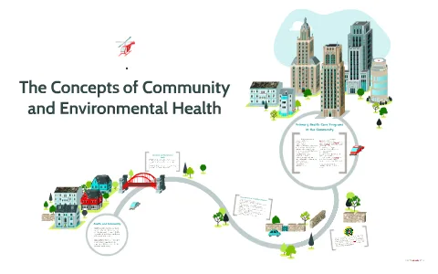
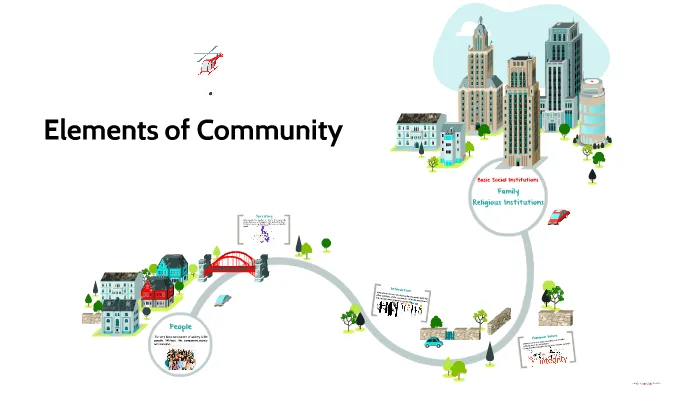
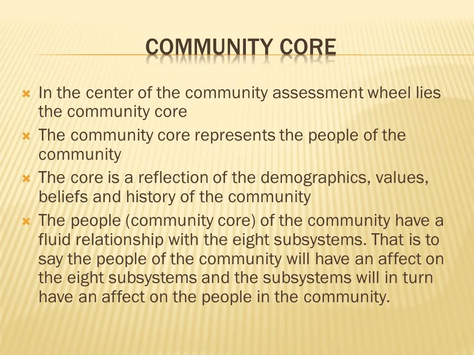

Expanded Nursing Uganda Explanation
Concept of the community should be understood beyond a short definition. Link the concept to patient history, focused assessment, common risks, nursing priorities, documentation and evaluation of outcomes.
01 **Concept of the Community**
Community is a social group determined by geographic boundaries, values, and interests. According to WHO (1974),
It is a group of inhabitants living together in a somewhat localized area under the same general regulations and having common interests, functions, needs, and organizations.
A cluster of people with at least one common characteristic (geography, occupation, race, ethnicity, housing condition…).
02 **Elements of the Community:**
- Membership – a sense of identity and belonging.
- Common symbol systems , e.g., a similar language, rituals, and ceremonies.
- Shared values and norms.
- Mutual influence, i.e., community members have influence and are influenced by each other.
- Shared needs and commitment to meeting them.
- Shared emotional connection , i.e., members share common problems, experiences, and mutual support.
03 **Features of a Community:**
A community has three features: location, population, and a social system.
- Location : Every physical community carries out its daily existence in a specific geographical location. The health of the community is affected by this location, including the placement of services and geographical features.
- Population : It consists of specialized aggregates, but all the diverse people who live within the boundary of the community.
- Social system : The various parts of the community’s social system that interact and include the health system, family system, economic system, and educational system.
04 **Components of Community:**
Communities have common components which include people, goals, needs, environment, service systems, and boundaries.
- The People : Refers to community residents; people are the most important resource; they are the community. People will cluster or separate based on a variety of individual demographics, hence psycho-social, economic & cultural characteristics.
- Goals & Needs : Refers to the goals & needs of people within the community. These are reflected & determine community goals & needs, which follow Maslow’s hierarchy in order of physiology, safety, social affiliation, esteem & self-actualization.
- Environment : Refers to where people are living. It includes physical characteristics such as geography, climate, and social entities. Biological & chemical characteristics like bacteria, water quality, and social characteristics such as economic, education, religion, and recreation, etc.
- Boundaries : Community has boundaries which serve to regulate the exchange of energy between a community and its external world. The boundaries may be complete or conceptual, etc.
- Service System : Residents of the community need to carry on their life within its boundaries. The community must be of sufficient size to sustain services & systems. The community must organize these systems so that the needs & goals of the population are met. These services & systems include health education, social welfare, religion, recreational facilities, and government.
Community core includes traits such as history, socio-demographic characteristics, vital statistics, and values/beliefs/core religions.
05 **Functions of the Community:**
- Production, Distribution, and Consumption: The community produces, distributes, and utilizes goods and services that meet the health and welfare needs of its residents.
- Socialization: It is the process by which prevailing knowledge, values, beliefs, and behavior are transmitted to community members to teach them how to be effective.
- Social Control: The community influences the behavior of its members through norms and beliefs of social control. A legal component is often enhanced through law agencies to safeguard and protect the community.
- Social Participation: It provides opportunities for members of the community to achieve psycho-social wellness, communication, social interaction with others, and support to meet self-fulfillment in the community.
- Natural Support: The provision of aid to one another is offered through families, friends, religious groups, official health services, and social fulfillment in the community. To educate and cultivate newcomers, e.g., children and immigrants.
- To determine the use of space for living and other purposes.
- To provide opportunities for interaction between individuals and groups.
06 **Factors Affecting the Health of the Community:**
These factors are categorized into Physical, Social-Cultural, Individuals, and Community Organization.
Physical Factors:
Physical factors include the influences of geography, the environment, community size, and industrial development.
- Geography : Health problems in a community can be directly influenced by its altitude, latitude, and climate. For example, in tropical countries, parasitic and infectious diseases are leading community problems due to favorable climatic conditions.
- Environment : The quality of our environment is directly related to the quality of our stewardship over it. Uncontrolled population growth continues to deplete non-renewable natural resources, and pollution affects the soil, water, and air.
- Community Size : The larger the community, the greater its range of health problems and the more health resources needed. A community’s size can impact both positively and negatively on its health.
- Industrial Development : Industrial development can have positive or negative effects on health status. Negative effects include environmental pollution and occupational illnesses. Communities experiencing rapid industrial development need to regulate industries in various ways.
Social and Cultural Factors:
Social factors arise from interactions among individuals or groups within the community, while cultural factors stem from societal guidelines.
- Beliefs and Traditions : Community members’ beliefs and traditions can affect the community’s health. Some cultural beliefs influence food choices and health behaviors like smoking and exercise. Prejudices among ethnic or racial groups can lead to violence and crime.
- Economy : National and local economies affect health and social services, like education. Economic downturns can lead to inadequate funds for community healthcare and other services, impacting the health of the unemployed and underemployed.
- Politics : Political leaders can improve or jeopardize community health through policy decisions and budgeting. Opposition politicians may propagate propaganda against government health policies.
- Religion : Religious beliefs can influence community health positively or negatively. Some religious communities restrict certain treatments, immunizations, or physician visits.
- Social Norms : Social norms can either positively or negatively impact community health. For example, smoking and excessive alcohol consumption may represent negative social norms in the community.
- Social-Economic Status (SES) : Socio-economic status influences individuals’ access to healthcare services and overall well-being. Those with lower SES tend to have poorer health and less access to health-promoting resources.
Individual Behavior:
- The behavior of individual community members contributes to the health of the entire community. Effective community health programs require concerted efforts from many individuals. For example, higher immunization rates slow the spread of diseases, reducing exposure through herd immunity.
- Herd Immunity: This concept refers to the resistance of a population to the spread of infectious agents based on the immunity of a high proportion of individuals.
- Family Planning Activities: Family planning activities as an individual factor of a community refer to the actions and decisions made by individuals within a community to control their family size and spacing of pregnancies. These activities can have a significant impact on the overall well-being and development of the community. Here are some common family planning activities as an individual factor: Contraceptive use : Individuals can choose to use various contraceptive methods to prevent unintended pregnancies. These methods include condoms, oral contraceptives, intrauterine devices (IUDs), implants, and sterilization.
- Education and awareness : Individuals can actively seek information and educate themselves about different family planning methods, their effectiveness, benefits, and potential risks. They can also engage in discussions and share knowledge with others in the community.
- Seeking healthcare services : Individuals can visit healthcare providers to access reproductive health services, including family planning counseling, screenings, and the provision of contraceptives. Regular check-ups and consultations can help individuals make informed decisions about their reproductive health.
- Communication within relationships : Individuals can engage in open and honest communication with their partners regarding family planning decisions. This includes discussing desired family size, spacing of pregnancies, and the choice of contraceptive methods.
- Responsible parenting : Individuals can actively participate in responsible parenting practices, such as spacing pregnancies appropriately, ensuring the health and well-being of existing children, and providing them with proper education and healthcare.
- Financial planning: Individuals can consider their financial situation and plan their family size accordingly. By assessing their resources, individuals can make informed decisions about the number of children they can adequately support and provide for.
- Empowering women: Individuals can support gender equality and women’s empowerment within the community. This includes advocating for women’s access to education, healthcare, and economic opportunities, which can positively impact family planning decisions.
- Advocacy and community engagement: Individuals can actively participate in community-based organizations, advocacy groups, or local initiatives that promote family planning and reproductive health. By raising awareness and sharing personal experiences, individuals can contribute to the overall improvement of family planning services and policies in their community.
07 Factors in the community which might influence the community health
- Safe H2O System 💧: Having clean and safe water to drink is important for everyone’s health. Dirty water can make people sick.
- Waste Disposal 🗑️: Properly getting rid of trash and waste is crucial. If it’s not done right, it can lead to diseases and pollution.
- Food Supplies (Quality and Quantity) 🍎🍞: Having enough good-quality food to eat is essential. If there’s not enough food or it’s not healthy, people can become malnourished.
- Access to Preventive and Curative Services 🏥💊: It’s important for people to have access to doctors and medicines to stay healthy and get better when they’re sick.
- Transportation System 🚗🚌: Having good transportation helps people get to work, school, and healthcare. It makes life easier for everyone.
- Education Facilities 📚✏️: Good schools help children learn and grow. Education is important for a healthy community.
- Employment Opportunities 💼👩💼: Having jobs means people can earn money to support themselves and their families. It’s crucial for a happy and healthy community.
- Climatic Conditions ☀️🌧️❄️: The weather can affect our health. Extreme heat or cold can be harmful if we’re not prepared.
- Size of Population 👥: The number of people in a community matters. A very crowded or very small population can have different health challenges.
- Cultural Benefits and Practices 🌍🌏: Different cultures have unique practices and traditions. Some of these practices can affect health positively or negatively.
- Internal and External Economic Influences 💰🌐: Money and trade with other places can impact a community’s wealth and access to resources.
- Formal and Informal Communication 🗣️📱: How people talk and share information matters. Good communication helps in emergencies and sharing health tips.
08 Nursing Uganda Clinical Lens
Use Concept of the community as a practical nursing topic, not only a memorized definition. Move from individual illness to prevention, population risk, health education and continuity of care.
- What to understand first: define concept of the community, identify the normal or expected pattern, then explain what changes when the patient is unwell.
- Why it matters in care: the nurse must recognize risk early, explain findings clearly, document accurately and know when to escalate.
- How to revise it: connect each point to assessment, nursing diagnosis or care problem, intervention, rationale and evaluation.
09 Assessment Guide
- Who is affected, where they live, risk factors, resources and barriers to care.
- Environmental hygiene, nutrition, immunization, water, sanitation and health-seeking behaviour.
- Community beliefs, leaders, household practices and surveillance data.
10 Nursing Priorities, Rationales and Outcomes
- Promote prevention, early detection, referral and community participation.
- Use clear health education matched to literacy, culture and available resources.
- Document findings and coordinate with community health structures.
The rationale for these priorities is patient safety: nursing actions should prevent deterioration, reduce discomfort, support recovery and create clear evidence for the next caregiver.
- Expected outcome: The community understands the message, risk is reduced and follow-up or referral pathways are active.
11 Patient Teaching and Revision Check
- Explain concept of the community in simple language the patient or caregiver can repeat back.
- Teach warning signs, medicine or follow-up instructions, hygiene or lifestyle points where relevant.
- For exams, prepare a short answer using: definition, causes or risk factors, signs, assessment, management, complications and prevention.
- For ward practice, document baseline findings, actions taken, patient response and the plan for review.
Illustrations and Diagrams (7)





Related Video Lectures
Watch nursing lecture videos on YouTube for this topic. Opens in a new tab.
Watch on YouTubeExternal link: YouTube may use its own cookies and terms. Nursing Uganda is not affiliated with YouTube.